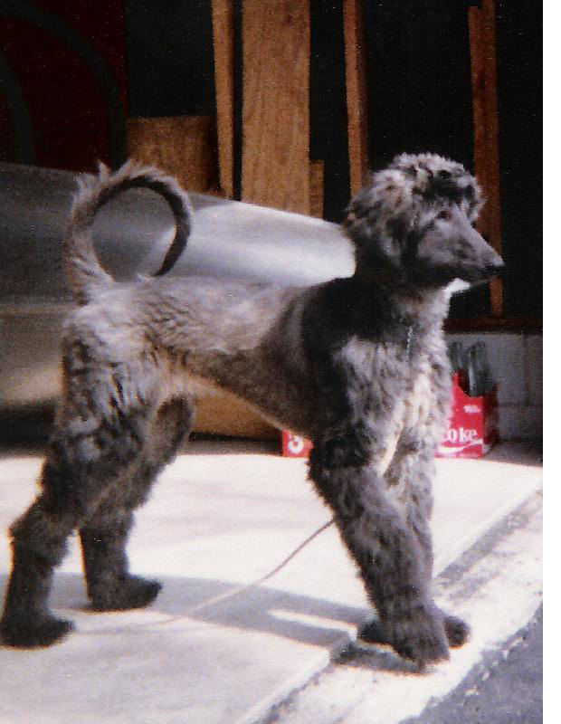

The Story of Our Second Blue(or Why We'll Never Have Another Dog) Our friends Art and Cherie bred, raised, and showed Afghans. We'd often go out to their place in the country outside of Cortland, Ohio where, on their seven acres, they always had three or four beautiful dogs which we often found running free inside a large fenced in exercise yard, with their tails held high bouncing in their wake and their long hair flowing gracefully along side their sleek, well-muscled bodies. I had worked with Art for several years, and we had become good friends, and Mei-O had also become good friends with Cherie. Both Mei-O and I loved visiting Art and Cherie's gorgeous Afghans. Having always been very allergic to dogs, I was quite surprised that the long, loose Afghan hair scattered everywhere around Art and Cherie's house didn't bother me in the slightest. The dogs wandered freely throughout all the rooms (in fact, they lived in the basement), yet I could spend a whole evening there without sneezing and without my eyes getting red and itchy, which is what usually happens when I spend any time in a house where cats or dogs live. Mei-O and I often thought we might want an Afghan of our own, but, though we owned our own house in the city, we felt our yard was too small for a big dog that needed plenty of room to romp and play. So we'd visit Art and Cherie and enjoy their dogs instead. One day, Art and Cherie asked us if we'd mind watching their house and caring for their Afghans while they went on vacation for a few weeks. Cindy, a striking blond, almost white Afghan, had recently delivered a litter of seven or eight pups, and they would need a lot of care. We happily agreed, and, according to Art's instructions, went to see the dogs at least once daily to feed, water, clean, and exercise them. The new puppies were especially fun. They were kept in a separate pen in the basement, and got so excited whenever Mei-O would open the pen's gate and approach them, jumping and yapping, their tails wagging, a true sign of happy pups. One pup in particular took a liking to Mei-O - a small, grayish-blue colored male. He wouldn't leave her alone and kept following her around and nipping at her feet as she walked around the pen cleaning up. Mei-O fell in love with the little guy, and we decided, despite our city-sized back yard, as soon as Art and Cherie got back, we would buy him. And that's how our second Blue, this one an AKC registered Afghan, came to join our family and live in our house in Warren, Ohio. I'm not sure how long we had Blue, but his hair got pretty long and he sure became a lot of work. Bathing and grooming him took hours, and his long hair tangled and matted easily and required a lot of maintenance. (The picture above was taken when he was still a puppy, before his hair got really long.) I loved walking him around the neighborhood no matter what the weather - it was good for both of us - but sadly, he had no place of his own to run. We'd take him up to Art and Cherie's occasionally to see his mom and others of 'his own kind', but he just didn't get the kind of exercise he needed in our city home. Several times he got free and escaped from our house, running all over the neighborhood, scaring the daylights out of us as he'd blindly dart out into the street. Once, he got a big bloody scratch on his nose from a piece of barbed-wire fence hidden in the brush in the forest behind our house. We'd chase him for hours, often enlisting the aid of neighbors to corner him, bring him down, and get a leash on him, then finally taking him home. I especially remember one time when Mei-O made a beautiful flying tackle in the deep snow to catch him. We knew he needed more freedom, and felt we just couldn't provide it for him. So, between the high maintenance (I guess we just aren't good dog people) and the lack of open space for Blue to romp around in, we decided it was time, as painful as it would be, to look for a better home for Blue. Mei-O had an acquaintance who lived out in the country with a very large open yard where Blue could run free. He worked with Mei-O, and she felt he and his family would be able to provide a good home for Blue. So, after days of agonizing thought, one day we handed Blue over to his new owner. Immediately he was sadly missed. A lot. But that's not the end of the story of our second Blue. It gets even worse. Just a few days after we gave Blue up, while driving down a major street in Warren on a rainy day, we spotted a dead dog lying at the side of the road. It was wet and dark gray in color, but looked much smaller than our Blue, and with the sky so dark and the rain coming down and the just quick glimpse we had of it, we thought nothing of it. Then that night, Mei-O had a dream - a nightmare. She dreamed that Blue was calling to her to please come and get him, to bring him home to us, that he wasn't happy where he was - and she woke up crying. Though it was just a dream, it was really sad and scary. Suddenly, we just had to find out if that was Blue we saw the day before, but when we went back the next day to check, there was nothing there. But we just had to know. So I called the city street maintenance department and asked them if they picked up a dead gray-colored dog off the street where we spotted him. They said yes, a gray afghan with a red collar. My heart sank; I knew it was our Blue. As it turned out, Blue's new owner brought Blue to the city one day to a friend's house
and, unbeknownst to him, Blue got loose and ran into the street. He never knew what happened to
Blue, only that he disappeared, and he was afraid to tell us. But we knew. And that is why we'll never have a dog again. |
{kind=link}
{kind=link}